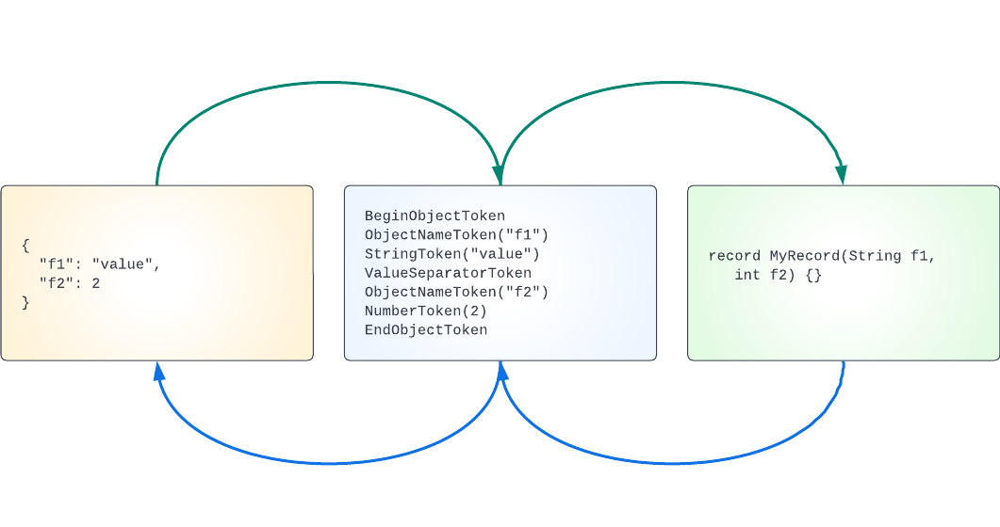

This is part 1 of the Bleeding edge Java series. Start at the introduction if you haven’t already.
A JSON library needs to:
- parse and comprehend JSON text
- map the JSON to Java objects
- map Java objects to JSON text
What is JSON text? RFC 8259 is the current best description of JSON: JavaScript Object Notation. The RFC describes “JSON Values”:
A JSON value MUST be an object, array, number, or string, or one of the following three literal names:
false,null,true. The literal names MUST be lowercase. No other literal names are allowed.
In addition, the RFC describes “six structural characters”:
begin-array =
[left square bracketbegin-object =
{left curly bracketend-array =
]right square bracketend-object =
}right curly bracketname-separator =
:colonvalue-separator =
,comma
Let’s use some newer features of Java to model the JSON RFC: records and sealed interfaces. A record is a kind of algebraic data type that declares a Java class that also specifies the data associated with that class. A sealed interface is a base interface that limits which classes can implement it. Sealing an interface allows code to be written that can have a hierarchy that is limited to a well known set of implementations. It also allows for writing pattern matches that are known at compile time to be complete. We explain pattern matches in a later article in this series.
We can create a sealed interface for our JSON models that defines a general type for a JSON token and limits the set of allowed tokens:
public sealed interface JsonToken {
// ... TODO ...
}
This looks like a normal Java interface with the addition of the keyword
sealed. A sealed interface or class encloses or “seals” any of its inner
classes. For each specific JSON token we could use a standard Java class.
Instead, we will use Java’s new record. A Java record is a concise description
of a class and the data associated with the class. The Java compiler adds any
needed boilerplate methods such as accessors, standard methods, etc.
Additionally, Java records are immutable.
Based on the JSON RFC we might define token records for: begin array, begin object, end array, end object, name separator, value separator as well as the JSON value types: string, number, true/false, and null. However, let’s simplify the RFC just a little: let’s design a token for an “object name” that combines a string value and a name separator. This pays benefits later on. Our model definition looks like this:
public sealed interface JsonToken
{
record BeginArrayToken()
implements JsonToken {}
record EndArrayToken()
implements JsonToken {}
record BeginObjectToken()
implements JsonToken {}
record EndObjectToken()
implements JsonToken {}
record ObjectNameToken(String name)
implements JsonToken {}
record ValueSeparatorToken()
implements JsonToken {}
record StringToken(String value)
implements JsonToken {}
record NumberToken(Number value)
implements JsonToken {}
record BooleanToken(boolean value)
implements JsonToken {}
record NullToken()
implements JsonToken {}
}
Some invariants about this definition:
- All the record tokens implement
JsonToken. - Users of this library cannot define new JsonToken types.
- We can now write code that relies on the fact that there is a known, limited set of JSON token types.
- Notice how little code is needed to fully specify the model. In the past Java was accused of being verbose. That is no longer the case.
With this hierarchy we have an abstract way to describe a JSON object. We can parse JSON text into a list of these tokens, or we can destructure a Java object into a list of tokens:

Summary
We have a simple model for JSON tokens, and learned how to use Java records and sealed interfaces. Next we use this model to continue developing our JSON library in serialization.
We’re hiring
Want to be able to use the latest features of Java? We’re hiring!
Jordan Zimmerman is a Senior Software Engineer working on
 .
.